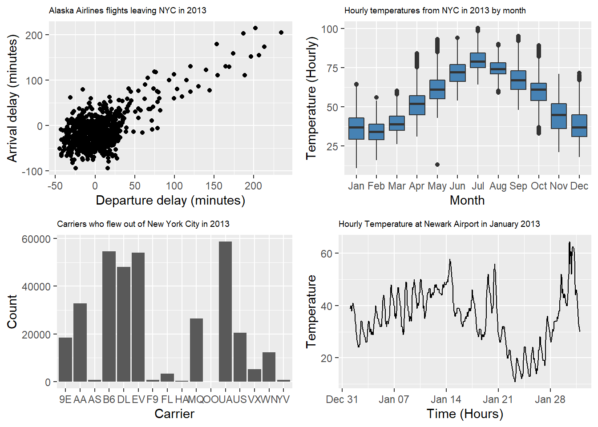

Arranging Multiple Plots On A Page
Often we need to produce plots of different types and display them together. The grid.arrange() function in the gridExtra package is one way to do this, as shown here in this code using plots that we have seen above:
library(gridExtra)
p1 <- ggplot(data = Alaska, mapping = aes(x = dep_delay, y = arr_delay)) +
geom_jitter(width = 30, height = 30) +
labs(x = "Departure delay (minutes)", y = "Arrival delay (minutes)",
title = "Alaska Airlines flights leaving NYC in 2013") +
theme(plot.title = element_text(size=7))
p2 <- ggplot(data = weather, mapping = aes(x = factor(month), y = temp)) +
geom_boxplot(fill = "steelblue") +
labs(x = "Month", y = "Temperature (Hourly)",
title = "Hourly temperatures from NYC in 2013 by month") +
scale_x_discrete(labels = c("Jan", "Feb", "Mar", "Apr", "May", "Jun",
"Jul", "Aug", "Sep", "Oct", "Nov", "Dec"))+
theme(plot.title = element_text(size=7))
p3 <- ggplot(data = carrier.freq, mapping = aes(x = carrier, y = number)) +
geom_col() +
labs(x = "Carrier", y = "Count",
title = "Carriers who flew out of New York City in 2013") +
theme(plot.title = element_text(size=7))
p4 <- ggplot(data = Newark.Jan, mapping = aes(x = time_hour, y = temp)) +
geom_line() +
labs(x = "Time (Hours)", y = "Temperature",
title = "Hourly Temperature at Newark Airport in January 2013") +
theme(plot.title = element_text(size=7))
grid.arrange(p1, p2, p3, p4, ncol=2)
More examples can be found in this vignette. Another way to do this is using the cowplot package.